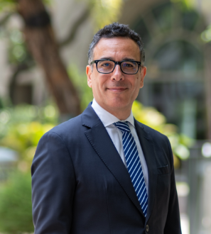
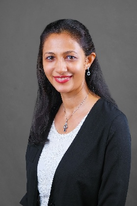
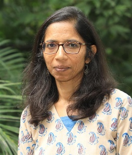
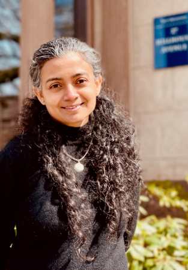
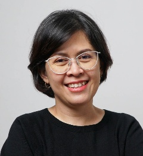
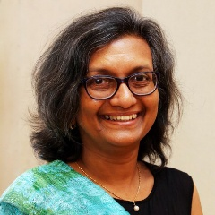
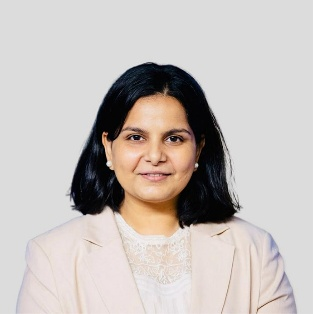

Speakers’ Profiles
Eka Chandra Buana
Deputy Minister
Macroeconomic Development Planning of the Ministry of National Development Planning/ BAPPENAS
Eka Chandra Buana is Deputy Minister for Macro Planning and Development at Indonesia’s Ministry of National Development Planning (Bappenas). He oversees macroeconomic planning and policy analysis to support Indonesia’s long-term development objectives. Before his current role, he served as Director for Macro Planning and Statistical Analysis. He holds a Master of Economics from Georgia State University and a Doctorate in Leadership and Policy Innovation at Gadjah Mada University.
Bobur Alimov
Country Director
Indonesia Resident Mission, Asian Development Bank
Bobur Alimov is the Country Director of ADB’s Indonesia Resident Mission, where he leads ADB's operations and engagement with the government, development partners, and private sector. He brings more than 28 years of professional experience, including more than 23 years in ADB, having held senior positions in Indonesia and the Kyrgyz Republic resident missions, the Central and West Asia Department, the Southeast Asia Department, Strategy, Policy and Partnerships Department and Transformation Office. He holds a Doctorate and Master’s degree in Economics from the University of Connecticut.

Matteo Lanzafame
Director
Macroeconomics Research Division, Economic Research and Development Impact Department (ERDI), Asian Development Bank
Matteo Lanzafame leads ADB’s Macroeconomics Research Division and oversees research and analysis supporting the Asian Development Outlook and other flagship publications. His research interests include macroeconomic policy, economic growth, labor markets, productivity, and structural transformation. He regularly leads regional assessments of economic developments and policy challenges across Asia and the Pacific. Prior to joining ADB in 2019, Dr. Lanzafame was Associate Professor of Political Economy at the University of Messina in Italy. He holds a Master’s degree in Development Economics and a PhD in Economics from the University of Kent, United Kingdom.

Madhavi Pundit
Principal Economist
Macroeconomics Research Division, Economic Research and Development Impact Department (ERDI), Asian Development Bank
Madhavi Pundit contributes to flagship publications, including the Asian Development Outlook and Asia-Pacific Climate Reports, providing research and policy analysis on macroeconomics, development, environmental, climate, and resilience issues. She recently led the APCR2025: Unlocking Nature for Development project and a Knowledge Technical Assistance on data for disaster impact assessments. Madhavi earned her Ph.D. in Economics from Boston College, USA, and was previously an Assistant Professor at the National Institute of Public Finance and Policy in New Delhi, India.
Jaqueson Galimberti
Senior Economist
Macroeconomics Research Division, Economic Research and Development Impact Department (ERDI), Asian Development Bank
Prior to joining ADB, Jaqueson worked as a Senior Economic Analyst at the Reserve Bank of New Zealand and as an Associate Professor at Auckland University of Technology. He obtained his PhD in Economics from the University of Manchester and worked as a postdoctoral researcher at ETH Zurich. His research is about macroeconomics with a focus on quantitative applications in measurement, forecasting, and the modelling of economic expectations. He has a track record of publications in top academic journals in the areas of macroeconomics and computational economics. In his recent research projects, he has been approaching issues such as growth forecasting and inequality measurement with the use of geospatial data.
Gabriele Ciminelli
Senior Economist
Macroeconomics Research Division, Economic Research and Development Impact Department (ERDI), Asian Development Bank
Gabriele Ciminelli contributes to flagship macroeconomic analysis, leads country diagnostics on structural reforms, and conducts research on macroeconomic policy, international finance, labor markets, and political economy. His work emphasizes policy-relevant empirical analysis and has been published in leading academic journals and informed policy reports at ADB, the OECD, and IMF. He received a PhD in Economics from the University of Amsterdam and the Tinbergen Institute in 2018.
Arturo M. Martinez, Jr.
Senior Statistician
Statistics and Data Innovation Unit, Economic Research and Development Impact Department, Asian Development Bank
Arturo Martinez Jr. coordinates the Key Indicators for Asia and the Pacific – ADB’s flagship statistical publication and specializes in poverty measurement theory and the compilation of Sustainable Development Goal (SDG) indicators. His work focuses on enhancing statistical capacity in developing member countries through innovative methodologies and the integration of big data sources such as satellite imagery and geospatial analytics. Before joining ADB, he was a Research Fellow at the University of Queensland’s Institute for Social Science Research, where he conducted studies on social and economic inequality and mobility. He earned his PhD in Social Statistics from the University of Queensland, and holds both bachelor’s and master’s degrees in Statistics from the University of the Philippines Diliman.

Hema Swaminathan
Senior Economist (Gender)
Economic Research and Operations Support Division, Asian Development Bank
Hema Swaminathan's research focuses on a range of issues including strengthening gender statistics across domains, improving survey methodology for individual-level data collection, policy applications of time use data, and a broad interest in poverty and inequality from a gender perspective. She was a lead researcher in the Gender Asset Gap Project, which pioneered the collection of individual-level data on asset ownership and contributed to international guidelines on gender-disaggregated wealth measurement. She has published extensively in leading journals, serves as an associate editor of Feminist Economics, and was previously Professor at the Indian Institute of Management Bangalore. She has a master’s in Economics from the University of Bristol and PhD in Agricultural Economics from the Pennsylvania State University.
Roshen Fernando
Economist
Macroeconomics Research Division, Economic Research and Development Impact Department (ERDI), Asian Development Bank
Roshen Fernando contributes to ERMR research and policy analysis on macroeconomics, growth, inflation, digital transformation, artificial intelligence, and economic development in Asia and the Pacific. Before joining ADB, Roshen worked as a consultant with the World Bank, where he co-developed economic models to assess the impact pathways of climate transition policies to inform advisory and analytical products. He earned his PhD in economics from the Australian National University with research covering the economic effects of COVID-19, climate change, and antimicrobial resistance.
Dennis Sorino
Senior Economics Officer
Macroeconomics Research Division, Economic Research and Development Impact Department (ERDI), Asian Development Bank
Dennis E. Sorino specializes in macroeconomic analysis, forecasting, monetary policy assessment, and economic modeling. He supports regional technical assistance projects, contributes to flagship economic publications, and conducts capacity-building programs for policymakers and central banks across Asia and the Pacific. He developed and maintained ERMR's key data portals and macroeconomic dashboards used for monitoring the economic activities of member DMCs. He holds an MA in Applied Statistics from the Polytechnic University of the Philippines and an MA in International Development from the International University of Japan.
Ed Kieran C. Reyes
Associate Economics Officer
Economic Research and Development Impact Department, Asian Development Bank
Ed Kieran Reyes’ work centers on macroeconomic surveillance and analysis, with an emphasis on data science and statistical methodologies. Previously, he worked as a consultant in ADB’s Data Division, focusing on big data analytics to support development research. He holds a bachelor’s degree in Statistics and a master’s degree in Development Economics, both from the University of the Philippines.
Joseph Albert Bulan
Associate Statistics Officer
Statistics and Data Innovation Unit, Economic Research and Development Impact Department, Asian Development Bank
Joseph Albert Bulan serves as one of ADB’s focal persons for poverty and inequality statistics. He contributes to the compilation of indicators for ADB’s flagship Key Indicators for Asia and the Pacific publication. Before joining ADB, he worked as a Statistical Specialist at the Philippine Statistics Authority, focusing on poverty measurement, SDG monitoring, and small-area estimation. He holds a Bachelor of Statistics degree from the University of the Philippines Los Baños.
Patrick Jaime A. Simba
Economics Analyst (Data Management)
Macroeconomics Research Division, Economic Research and Development Impact Department (ERDI), Asian Development Bank
Patrick Jaime A. Simba is an Economics Officer in ADB’s Macroeconomics Research Division. His work supports macroeconomic surveillance, regional economic analysis, and policy research covering growth, inflation, and development challenges in Asia and the Pacific. He contributes to ADB’s analytical and flagship research outputs. He holds a Bachelor of Science in Economics from the University of Minnesota Twin Cities.

Aishwarya Lakshmi Ratan
Deputy Director
Economic Growth Center, Yale University
Aishwarya Lakshmi Ratan serves as the Deputy Director of the Economic Growth Center since March 2022. Prior to EGC, Aishwarya managed research and evaluation investments for the Gates Foundation’s Women’s Economic Empowerment and Financial Services for the Poor teams. Her previous experience includes running a financial inclusion research initiative at EGC from 2011-2014 in partnership with Innovations for Poverty Action, leading the Monitoring, Research and Evaluation unit at Women for Women International, and working as an Associate Researcher at Microsoft Research India. Aishwarya earned a bachelor’s degree in economics and women’s studies from Wellesley College and a master’s degree in public administration and international development from the Harvard Kennedy School.
Daniela Hauser
Senior Research Advisor
International Economic Analysis Department, Bank of Canada
Daniela Hauser is Senior Research Advisor in the International Economic Analysis Department of the Bank of Canada. Her research focuses on international macroeconomics, monetary and fiscal policy, labor economics, and applied macroeconomics. She holds a PhD in Economics from the Universitat Autònoma de Barcelona.

Diahhadi Setyonaluri (Ruri)
Assistant Professor
Universitas Indonesia
Diahhadi Setyonaluri is an Assistant Professor at the Faculty of Economics and Business and a Senior Researcher at Lembaga Demografi, Universitas Indonesia. A demographer by training (PhD, Australian National University), she works on gender, care and labour market dynamics in Indonesia. She led Indonesia’s pilot of the ILO time-use survey instrument in Greater Jakarta and Surabaya, and her research on unpaid care, maternity protection and social norms around women’s employment informs policy advice to the Indonesian government.

Dileni Gunewardena
Professor of Economics
University of Peradeniya, Sri Lanka
Dileni Gunewardena is Professor of Economics at the University of Peradeniya, Sri Lanka, a Non-Resident Fellow at Verité Research, and a Research Fellow at the Partnership for Economic Policy. Her research spans gender, labour and development economics, with a focus on gender wage gaps, female labour force participation, poverty and the care economy. She recently authored the Asian Development Bank report Exploring the Factors Behind Low Female Labor Force Participation in Sri Lanka. She leads the Sri Lanka team of the Care Economies in Context project at the University of Toronto’s Centre for Global Social Policy. Her co-authored papers use Sri Lanka’s National Time Use Survey to estimate the monetary value of unpaid care work and examine household time allocation, including “Unpaid care work in Sri Lanka: who cares and who shares?”.
Jessamyn Encarnacion
Director
United Nations Statistical Institute for Asia and the Pacific (UNSIAP)
Jessamyn Encarnacion is the Director of the United Nations Statistical Institute for Asia and the Pacific (SIAP), bringing 29 years of experience in official statistics, statistical capacity development and policy. Prior to joining SIAP, she held senior leadership and advisory roles at UN Women, contributing to the global gender data and statistics agenda, including advancing the production, analysis and use of time-use statistics to inform gender-responsive policies. She has also held senior positions in the Philippine statistical system and previously served as Regional Adviser on Statistics at ESCAP.
Jiweon Jun
Researcher
Seoul National University
Jiweon Jun is a Senior Research Fellow at the Center for Transnational Migration and Social Inclusion, Seoul National University. Her research examines time use, the organisation of paid and unpaid care, and work–life balance in the context of low fertility and population ageing. She also works on multidimensional measures of wellbeing and care burden. She co-authored the Data2X country report Role of Time Use Data in Policymaking in South Korea (2025), has led surveys on care work in Korea, and has contributed to the international projects Care Work and the Economy (CWE-GAM) and Care Economies in Context. She holds an MSc and a DPhil in Sociology from the University of Oxford and has held research positions at Oxford’s Centre for Time Use Research and the University of Toronto’s Centre for Global Social Policy.
Megan O’Donnell
Policy and Research Leader
Gates Foundation
Megan O’Donnell is a Senior Program Officer for Development Policy and Finance at the Gates Foundation and was previously a policy fellow at the Center for Global Development, where she co-directed its gender equality and inclusion research program. Her work focuses on the care economy, social protection, women’s economic empowerment, gender data, and development effectiveness. She previously worked at the ONE Campaign and held roles at the Inter-American Development Bank, the International Center for Research on Women, CARE USA, Banyan Global, and the Middle East Institute. She holds a master’s degree in Middle Eastern Studies from the University of Oxford and a bachelor’s degree in Politics and French from the University of Virginia.
Myagmarsuren Boldbaatar
Associate Professor
National University of Mongolia
Myagmarsuren Boldbaatar is an Associate Professor in the Department of Economics at the National University of Mongolia. She received her Ph.D. from Korea University in South Korea and focuses her research on financial development and economic growth, education, agriculture, and issues related to the care economy. Over the past years, Myagmarsuren has been one of Mongolia's leading researchers on care economies, making significant contributions to this emerging field. She teaches courses such as Probability and Inference, Social, Business, and Gender Statistics, and Macroeconomics, Basic and Intermediate Econometrics for undergraduate and graduate students.

Tanu M. Goyal
Senior Fellow
Indian Council for Research on International Economic Relations (ICRIER)
Tanu M. Goyal has nearly two decades of experience in policy-focused research, with recent work advancing India’s inclusive growth agenda, particularly on micro, small and medium enterprises (MSMEs), women-led development, and free trade agreements. She has authored numerous research papers, reports, and opinion articles, co-authored a book on India’s special economic zones (Springer), and co-edited a volume on the India–European Union free trade agreement (Sage Publications). She holds a Master’s degree in Economics from the Centre for International Trade and Development and a PhD from the Centre for the Study of Law and Governance, Jawaharlal Nehru University.